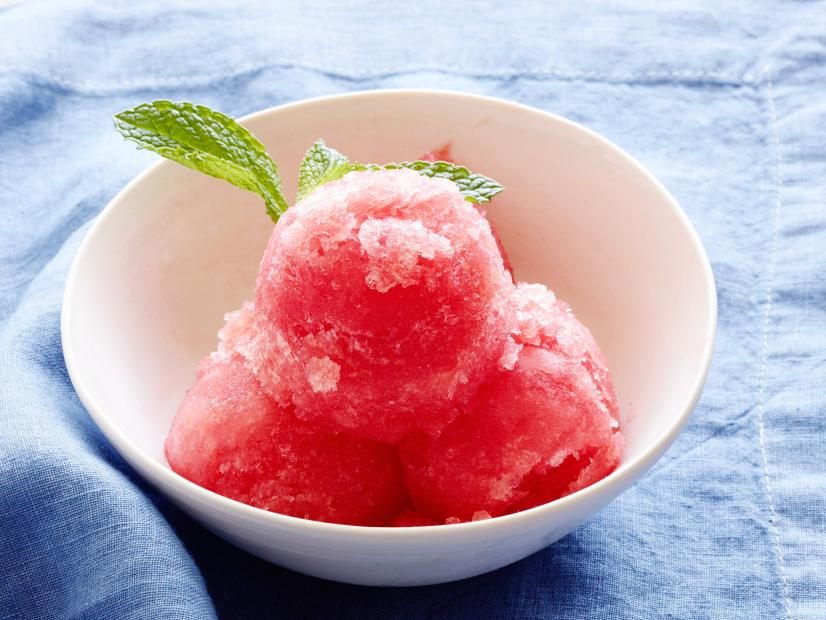

How to Make Watermelon sorbet

Sorbet is a frozen dessert made from sugar-sweetened water with flavoring – typically fruit juice, fruit purée, wine, liqueur or honey
Ingredients
- 1 cup white sugar
- ½ cup water
- ¼ cup lemon juice
- 3 cups cubed seeded watermelon
Lets make watermelon sorbet!!
- Combine sugar, water, and lemon juice in a saucepan over medium heat; cook and stir until sugar is dissolved, about 5 minutes. Remove from heat and refrigerate until cooled, about 30 minutes.
- Blend watermelon in a blender or food processor until pureed. Stir pureed watermelon into sugar mixture. Transfer watermelon mixture to an ice cream maker and freeze according to manufacturer's instructions.